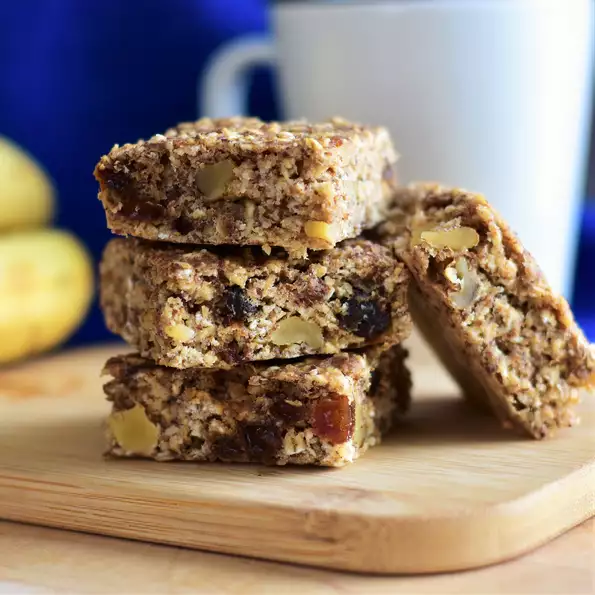

Breakfast Brownie Recipie

Ingredients
- 1.5 cups quick-cooking oats
- .75 cups brown sugar
.75 cups flax seed meal
.5 cup gluten-free all purpose baking flour
- 1 teaspoon baking powder
- .5 teaspoon ground cinnamon
.25 teaspoon salt
- 1 banana, mashed
- .25 cup rice milk
- 1 egg
- 1 teaspoon vanilla extract
Steps
- Preheat oven to 350 degrees F (175 degrees C). Lightly grease an 8x10-inch baking pan.
- Mix oats, brown sugar, flax seed meal, flour, baking powder, cinnamon, and salt together in a bowl. Mix banana, rice milk, egg, and vanilla extract together in a separate bowl. Pour banana mixture into flour mixture; stir to combine. Pour batter into the prepared baking pan.
- Bake brownies in the preheated oven until a toothpick inserted in the center comes out clean, about 20 minutes. Cover pan with a towel to hold in moisture and cool brownies for at least 5 minutes before serving.